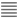

(한컴 기안기 대비)
| 분류 | 관련 | 기능 | 단축키 | 메뉴 경로 | 단축키 동일 여부 (한컴 기안기 대비) |
|---|---|---|---|---|---|
| 편집 메뉴 | 기본 작업 상태 | 되돌리기 | Ctrl+Z | 편집-되돌리기 | O |
| 편집 메뉴 | 기본 작업 상태 | 다시 실행 | Ctrl+Shift+Z | 편집-다시 실행 | O |
| 편집 메뉴 | 기본 작업 상태 | 오려 두기 | Ctrl+X / Shift+Delete | 편집-오려 두기 | O |
| 편집 메뉴 | 기본 작업 상태 | Ctrl+C / Ctrl+Insert | 편집-복사하기 | O | |
| 편집 메뉴 | 기본 작업 상태 | 붙이기 | Ctrl+V / Shift+Insert | 편집-붙이기 | O |
| 입력 메뉴 | 기본 작업 상태 | 문자표 | Ctrl+F10 | 입력-문자표 | O |
| 서식 메뉴 | 기본 작업 상태 | 글자 모양 | Alt+L | 서식-글자 모양 | O |
| 서식 메뉴 | 기본 작업 상태 | 문단 모양 | Alt+T | 서식-문단 모양 | O |
| 서식 메뉴 | 글자 블록 상태 | 자간 넓게 | Alt+Shift+W | 서식-글자 모양 | O |
| 서식 메뉴 | 글자 블록 상태 | 자간 좁게 | Alt+Shift+N | 서식-글자 모양 | O |
| 서식 메뉴 | 글자 블록 상태 | 밑줄 | Alt+Shift+U / Ctrl+U | 서식-글자 모양 | O |
| 서식 메뉴 | 글자 블록 상태 | 굵게 | Alt+Shift+B / Ctrl+B | 서식-글자 모양 | O |
| 서식 메뉴 | 글자 블록 상태 | 기울임 | Alt+Shift+I / Ctrl+I | 서식-글자 모양 | O |
| 서식 메뉴 | 문단 속성 관련 | 줄 간격 넓게 | Alt+Shift+Z | 서식-문단 모양 | O |
| 서식 메뉴 | 문단 속성 관련 | 줄 간격 좁게 | Alt+Shift+A | 서식-문단 모양 | O |
| 서식 메뉴 | 문단 속성 관련 | 양쪽 정렬 | Ctrl+Shift+M | 서식-문단 모양 | O |
| 서식 메뉴 | 문단 속성 관련 | 왼쪽 정렬 | Ctrl+Shift+L | 서식-문단 모양 | O |
| 서식 메뉴 | 문단 속성 관련 | 오른쪽 정렬 | Ctrl+Shift+R | 서식-문단 모양 | O |
| 서식 메뉴 | 문단 속성 관련 | 가운데 정렬 | Ctrl+Shift+C | 서식-문단 모양 | O |
| 표 메뉴 | 셀 내 커서 상태 | 글자 모양 | Alt+L | (빠른 메뉴)글자 모양 | O |
| 표 메뉴 | 셀 내 커서 상태 | 문단 모양 | Alt+T | (빠른 메뉴)문단 모양 | O |
| 표 메뉴 | 셀 내 커서 상태 | 줄/칸 추가하기 | Alt+Insert | (빠른 메뉴)표-줄/칸 추가하기 | O |
| 표 메뉴 | 셀 내 커서 상태 | 줄/칸 지우기 | Alt+Delete | (빠른 메뉴)표-줄/칸 지우기 | O |
| 표 메뉴 | 셀 내 커서 상태 | 문자표 | Ctrl+F10 | (빠른 메뉴)문자표 | O |
| 표 메뉴 | 셀 블록 상태 | 셀 합치기 | Alt+Shift+M | (빠른 메뉴)셀 합치기 |
O |
| 표 메뉴 | 셀 블록 상태 | 셀 나누기 | Alt+Shift+S | (빠른 메뉴)셀 나누기 |
O |
| 분류 | 관련 | 기능 | 단축키 | 메뉴 경로 | 단축키 동일 여부 (한컴 기안기 대비) |
|---|---|---|---|---|---|
| 편집 메뉴 | 기본 작업 상태 | 원하는 만큼 블록 설정 | Shift+←/→ | - | O |
| 편집 메뉴 | 기본 작업 상태 | 커서부터 줄 처음/끝까지 블록 설정 |
Shift+Home/End | - | O |
| 기본 단축키 | 커서 이동 관련 | 빈칸 삽입 | SpaceBar | - | O |
| 기본 단축키 | 커서 이동 관련 | 문단 나누기 | Enter | - | O |
| 기본 단축키 | 커서 이동 관련 | 한 글자 왼쪽으로 | ← | - | O |
| 기본 단축키 | 커서 이동 관련 | 한 글자 오른쪽으로 | → | - | O |
| 기본 단축키 | 커서 이동 관련 | 한 줄 아래로 | ↓ | - | O |
| 기본 단축키 | 커서 이동 관련 | 한 줄 위로 | ↑ | - | O |
| 기본 단축키 | 커서 이동 관련 | 한 단어 오른쪽으로 | Ctrl+→ | - | O |
| 기본 단축키 | 커서 이동 관련 | 한 단어 왼쪽으로 | Ctrl+← | - | O |
| 기본 단축키 | 커서 이동 관련 | 줄 처음으로 | Home | - | O |
| 기본 단축키 | 커서 이동 관련 | 줄 끝으로 | End | - | O |
| 기본 단축키 | 지우기 관련 | 뒷글자 지우기 | Delete | - | O |
| 서식 메뉴 | 기본 작업 상태 | 문단 번호 속성 삽입/해제 | Ctrl+Shift+Insert | 서식-문단 번호 적용/해제 | O |
| 서식 메뉴 | 기본 작업 상태 | 글머리표 속성 삽입/해제 | Ctrl+Shift+Delete | 서식-글머리표 적용/해제 | O |
| 서식 메뉴 | 글자 블록 상태 | 글씨 크게 | Alt+Shift+E / Ctrl+] |
서식-글자 모양 | O |
| 서식 메뉴 | 글자 블록 상태 | 글씨 작게 | Alt+Shift+R / Ctrl+[ |
서식-글자 모양 | O |
| 서식 메뉴 | 문단 속성 관련 | 왼쪽 여백 줄이기 | Ctrl+Alt+F5 / Ctrl+Shift+E |
서식-문단 모양 | O |
| 서식 메뉴 | 문단 속성 관련 | 왼쪽 여백 늘이기 | Ctrl+Alt+F6 / Ctrl+Shift+G |
서식-문단 모양 | O |
| 서식 메뉴 | 문단 속성 관련 | 오른쪽 여백 늘이기 | Ctrl+Alt+F7 / Ctrl+Shift+D |
서식-문단 모양 | O |
| 서식 메뉴 | 문단 속성 관련 | 오른쪽 여백 줄이기 | Ctrl+Alt+F8 / Ctrl+Shift+F |
서식-문단 모양 | O |
| 서식 메뉴 | 문단 속성 관련 | 첫 줄 내어 쓰기 | Ctrl+F5 / Ctrl+Shift+O |
서식-문단 모양 | O |
| 서식 메뉴 | 문단 속성 관련 | 첫 줄 들여 쓰기 | Ctrl+F6 / Ctrl+Shift+I |
서식-문단 모양 | O |
| 서식 메뉴 | 문단 속성 관련 | 양쪽 여백 줄이기 | Ctrl+F7 | 서식-문단 모양 | O |
| 서식 메뉴 | 문단 속성 관련 | 양쪽 여백 늘이기 | Ctrl+F8 | 서식-문단 모양 | O |
| 쪽 메뉴 | 기본 작업 상태 | 편집 용지 | F7 | 쪽-편집 용지 | O |
| 쪽 메뉴 | 기본 작업 상태 | 쪽 나누기 | Ctrl+Enter / Ctrl+J |
쪽-쪽 나누기 | O |
| 쪽 메뉴 | 기본 작업 상태 | 강제 줄 나누기 | Shift+Enter | - | O |
| 표 메뉴 | 셀 내 커서 상태 | 현재 셀 선택 (방향키 누르면 셀 블록 이동) |
F5 | - | O |
| 표 메뉴 | 셀 내 커서 상태 | 셀 단위로 커서 이동 | Alt+방향키 | - | O |
| 표 메뉴 | 셀 내 커서 상태 | 붙이기 | Ctrl+V | (빠른 메뉴) 붙이기 | O |
| 표 메뉴 | 셀 내 커서 상태 | 가로 합계 | Ctrl+Shift+H | (빠른 메뉴) 쉬운 계산식-가로 합계 |
O |
| 표 메뉴 | 셀 내 커서 상태 | 세로 합계 | Ctrl+Shift+V | (빠른 메뉴) 쉬운 계산식-세로 합계 |
O |
| 표 메뉴 | 셀 내 커서 상태 | 가로 평균 | Ctrl+Shift+J | (빠른 메뉴) 쉬운 계산식-가로 평균 |
O |
| 표 메뉴 | 셀 내 커서 상태 | 세로 평균 | Ctrl+Shift+B | (빠른 메뉴) 쉬운 계산식-세로 평균 |
O |
| 표 메뉴 | 셀 내 커서 상태 | 가로 곱 | Ctrl+Shift+K | (빠른 메뉴) 쉬운 계산식-가로 곱 |
O |
| 표 메뉴 | 셀 내 커서 상태 | 세로 곱 | Ctrl+Shift+N (IE만 지원) |
(빠른 메뉴) 쉬운 계산식-세로 곱 |
O |
| 표 메뉴 | 셀 블록 상태 | 현재 셀이 속한 가로줄/세로 칸 전체 크기 |
Ctrl+화살표 | - | O |
| 표 메뉴 | 셀 블록 상태 | 표 크기를 고정한 채 가로줄/세로 칸 크기 |
Alt+화살표 | - | O |